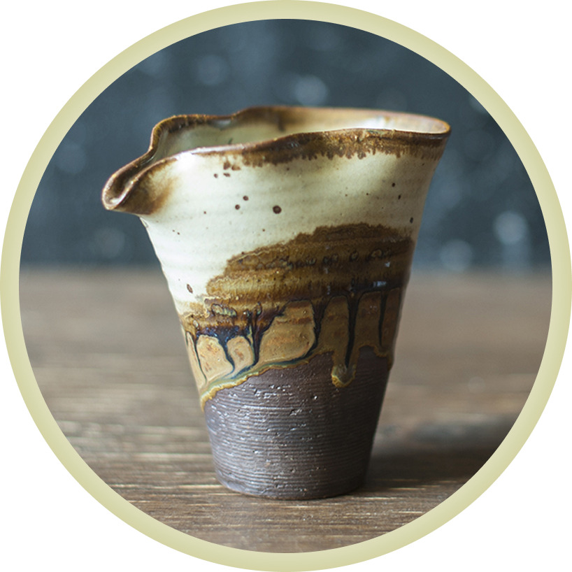

В переводе «море чая» или чаша справедливости (гундаобей, 公道杯) — с одной стороны, не обязательный предмет при заваривании, но, с другой, — без него неудобно. После заваривания чайного листа в гайвани или в чайнике настой переливают в чашу справедливости. Главная функция этого сосуда понятна из названия. Если в пиалу гостям разлить чай сразу из чайника, у первого гостя будет слабый настой, а у последнего — самый насыщенный. Это несправедливо. Если же перелить настой в чахай и после разливать в чаши, в каждой чаше будет одинаковый по вкусу чай. Кроме того, чахай выполняет ещё ряд функций. В нем настой отделен от заварки, то есть заваривание остановлено, лист в чайнике ждёт следующей порции воды, и можно не торопиться разливать его по чашам. После того, как чахай опустел, можно вкусить аромат чая, который остался на стенках сосуда, он там выражен в наилучшем виде. Если чахай стеклянный, можно ещё и полюбоваться цветом настоя на просвет.
